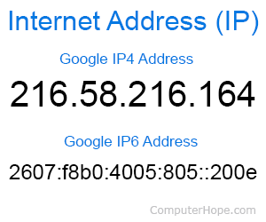
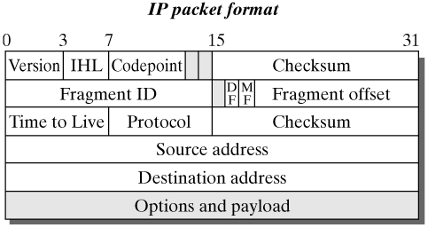
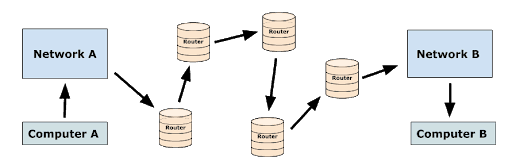

IP stands for Internet Protocol. The Internetworking Protocol was created by Vint Cerf and Bob Kahn which became the basis for the Internet. A protocol is a set of rules and standards that all involved parties agree to use. The design philosophy of the Internet is that participating networks must conform to the protocols required for interconnection. This philosophy allows for the Internet to adapt and absorb new communication technologies.
The Internet Protocol (IP) assigns a unique numbered address to each computer or device connected to the Internet. These IP addresses have 4 groups of decimal numbers separated by periods with each group representing 8 bits of the address. Designed in 1973, IPv4 can only accept these 32-bit addresses resulting in 4 billion unique IP addresses. Believe it or not, we have run out of IP addresses for all of our devices! IPv6 was created to handle 128-bit addresses by utilizing a hexadecimal (a combination of letters and numbers) and we are in the middle of a years-long conversion process to the new version. The IP characters are arranged in a hierarchy with the left-most characters representing the national and regional network and the characters to the right indicating the subnetwork and ultimately the end device.
 Packets are small chunks of data structured with a header containing control information for delivery, user data (aka the payload), and a footer which handles error checking (also known as a Cyclic Redundancy Check). Packets are transmitted at the network layer (layer 3) of the 7-layer OSI model of computer networking. Packets travel across the Internet in varying routes based on different factors including availability, latency, and even politics and relationships between companies. Routers also operate network layer (layer 3) and are responsible for monitoring these factors and routing the packets to their destination using the cheapest (most efficient) path. Routers record the metrics of different potential routes to various destinations in a locally stored routing table. This design using multiple paths to choose from provides for inherent fault-tolerance and reliability. TCP stands for Transfer Control Protocol and it verifies the fidelity of packets sent and received by the computer. TCP reassembles the packets in order and sends acknowledgements for each packet and if any are missing, TCP will request that the server sends them again. Both TCP and the packet routing systems are scalable so we can add more routers for redundancy to improve the stability of the Internet while causing no interruption for users.